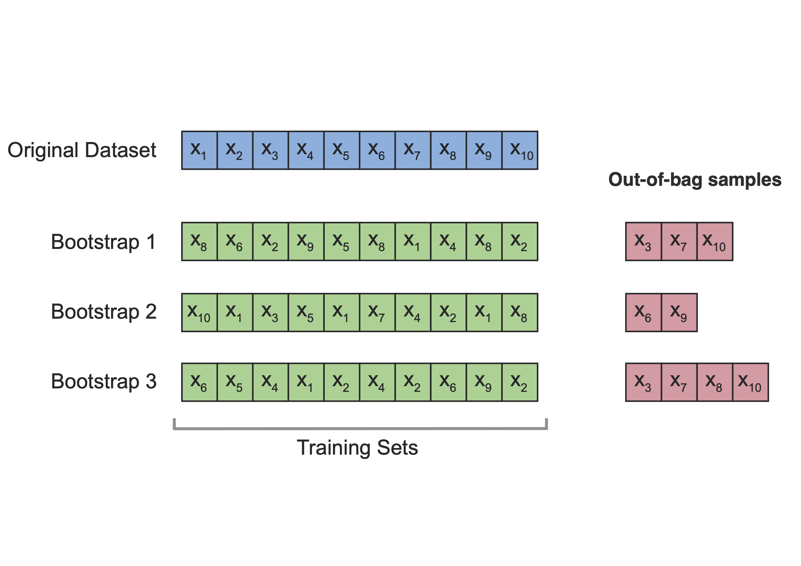

# Load required packages
library(dplyr)
library(glmnet) # Lasso regression
library(Metrics) # RMSE
# Load the data
Data <- read.csv("insurance.csv")
# Split data into predictors (X) and response (y)
Data_X <- Data[, -7]
Data_Y <- Data[, 7]
# Create model matrix for glmnet
X_matrix <- model.matrix(~ ., Data_X) #This step converts categorical variables into dummy variables for use in glmnet.
Y_matrix <- as.matrix(Data_Y)
# Linear model
model_linear <- lm(charges ~ ., data = Data)
# Lasso model
set.seed(2023)
CV_lasso <- cv.glmnet(
X_matrix, Y_matrix,
family = "gaussian",
alpha = 1,
nfolds = 10
)
model_lasso <- glmnet(
X_matrix, Y_matrix,
lambda = CV_lasso$lambda.min,
alpha = 1
)
# Generalized linear model with log link
model_loglinear <- glm(
charges ~ ., data = Data,
family = gaussian(link = "log")
)Lab: Evaluation
Actuarial Data Science - Open Learning Resource
Learning Objectives
- Understand how to build models for insurance premiums, including:
- a linear model without any penalty,
- a linear model with a Lasso penalty, and
- a generalized linear model with a log link function.
- Compare these models using various evaluation techniques, including AIC, BIC, validation sets, cross-validation, and bootstrap methods.
Tasks for this Lab
- Use the code below to build:
- a linear model without any penalty,
- a linear model with a Lasso penalty, and
- a generalized linear model with a log link function.
- Compare the three models using:
- AIC and BIC,
- the validation set approach,
- cross-validation, and
- bootstrap methods.
- Based on the results, determine which model performs best.
Model Details
Linear Model
E(y_i) = x_i^\top \beta \tag{1}
where y_i is the premium for the i-th observation, x_i is the vector of explanatory variables, and \beta is the corresponding coefficient vector.
A limitation of the linear model is that the predicted premiums may take negative values, which is not appropriate in this context.
Linear Model with Lasso Penalty
To control model complexity, we can add a Lasso penalty to the linear model in Equation 1. The Lasso estimator is defined as
\hat{\beta} = \arg\min_{\beta} \left\{ \sum_{i=1}^n (y_i - x_i^\top \beta)^2 + \lambda \sum_{j=1}^p |\beta_j| \right\} \tag{2}
where \lambda \ge 0 is a tuning parameter that controls the strength of the penalty.
Generalized Linear Model with Log Link Function
Another approach is to use a generalized linear model (GLM) with a log link function. In this case,
E(y_i) = \exp(x_i^\top \beta) \tag{3}
This ensures that the predicted premiums are always positive.
Model Assessment Methods
AIC
The Akaike Information Criterion (AIC) is a model selection method based on in-sample fit, which aims to estimate how well a model is expected to predict future observations. The idea of AIC is to penalise the likelihood if additional variables without strong predictive ability are included. A model with a smaller AIC value is generally preferred.
\text{AIC} = -2 \log(L) + 2k \tag{4}
where L is the likelihood of the model and k is the number of estimated parameters.
The AIC applies a relatively mild penalty for model complexity. As a result, it may favour more complex models that achieve better in-sample fit. Compared with BIC (see Equation 5), AIC typically selects more complex models.
BIC
The Bayesian Information Criterion (BIC) is another model selection criterion that measures the trade-off between model fit and model complexity. A lower BIC value is generally preferred.
\text{BIC} = -2 \log(L) + \log(N) \, k \tag{5}
where L is the likelihood of the model, N is the number of observations, and k is the number of estimated parameters.
Compared to AIC, the BIC imposes a stronger penalty on model complexity. As a result, it tends to favour simpler models. Both AIC and BIC are widely used to assess how well a model fits the data while accounting for model complexity. In practice, they are often used together to compare competing models.
AIC and BIC are not directly available from the glmnet package. However, they can be approximated using Equation 4 and Equation 5.
To implement these formulas in R, we often assume that the residual errors are normally distributed. Under this assumption, AIC and BIC can be written as:
\text{AIC} = N \log(\hat{\sigma}^2) + 2k \tag{6}
\text{BIC} = N \log(\hat{\sigma}^2) + \log(N)\, k \tag{7}
where \hat{\sigma}^2 is the estimated variance of the residual errors.
For more details, see the following resources:
Validation Set Approach
We aim to estimate the test error associated with a statistical learning method. To do this, the dataset is randomly split into two parts: a training set and a validation (or testing/hold-out) set. The model is fitted using the training set only, and its performance is evaluated on the unseen validation set.
The validation set approach can be summarised as follows:
Fit the model on the training set.
Use the fitted model to predict the responses for the observations in the validation set.
Evaluate the prediction error on the validation set, typically using the mean squared error (MSE) for a quantitative response. The MSE is defined as:
\text{MSE} = \frac{1}{n} \sum_{i=1}^{n} (y_i - \hat{y}_i)^2 \tag{8}
where y_i denotes the observed value and \hat{y}_i denotes the predicted value for observation i in the validation set.
However, the validation set approach can have high variability. The estimated error may depend heavily on how the data are split into training and validation sets. In addition, only a subset of the data is used for model fitting, which may reduce the stability of the fitted model.
In this tutorial, we randomly split the data into 70\% for training and 30\% for validation.
Cross-validation (CV) Approach
Cross-validation (CV) is used to estimate the test error associated with a statistical learning method and to evaluate its performance. The steps can be summarised as follows:
The dataset is randomly divided into k groups (or folds) of approximately equal size.
For each fold, the model is trained on the remaining k-1 folds and evaluated on the held-out fold.
The mean squared error (MSE) is computed on the validation fold using Equation 8.
This procedure is repeated k times, with each fold used once as the validation set. This results in k estimates of the test error: \text{MSE}_1, \text{MSE}_2, \ldots, \text{MSE}_k.
The k-fold cross-validation estimate is obtained by averaging these values:
\text{CV}_k = \frac{1}{k} \sum_{i=1}^{k} \text{MSE}_i \tag{9}
An advantage of this method is that it is less sensitive to how the data are split. Each observation is used once for validation and k-1 times for training.
In general, as k increases, the bias of the estimate decreases, but the variance increases.
A disadvantage is that the model must be refitted k times, which increases computational cost.
A related approach is repeated random splitting (also known as repeated validation set approach), where the data are randomly split into training and validation sets multiple times. This allows flexibility in choosing the size of the validation set and the number of repetitions.
Bootstrap Approach
The bootstrap approach provides another way to estimate the test error of a statistical learning method.
The idea is to repeatedly sample (with replacement) from the original dataset to create multiple bootstrap samples. For each bootstrap sample, the model is fitted, and its performance is evaluated on observations that are not included in that sample (known as out-of-bag observations).
For each observation, we only use predictions from bootstrap samples that do not contain that observation. The leave-one-out bootstrap estimate of the prediction error is given by:
\hat{\text{Err}}^{(1)} = \frac{1}{n} \sum_{i=1}^{n} \frac{1}{|C^{-i}|} \sum_{b \in C^{-i}} L\big(y_i, \hat{f}^{*b}(x_i)\big)
where C^{-i} is the set of bootstrap samples that do not contain observation i, and |C^{-i}| is the number of such samples.
In summary, models are fitted on bootstrap samples (training sets) and evaluated on the corresponding out-of-bag observations (test sets), as illustrated in Figure 1.

Emperical Study
We first load the data and build three models: a linear model, a Lasso model, and a generalized linear model with a log link.
AIC and BIC
We can directly use the AIC() and BIC() functions to compute these criteria for the linear model and the generalized linear model.
However, for the Lasso model fitted using glmnet, these quantities are not directly available, so we compute them manually.
In this dataset, the generalized linear model has the lowest AIC and BIC values, and is therefore preferred according to these criteria.
# Number of observations
n <- nrow(Data)
# Linear model
AIC(model_linear)[1] 27115.51BIC(model_linear)[1] 27167.5# Lasso model (manual calculation)
y_hat_lasso <- predict(model_lasso, newx = X_matrix)
AIC_lasso <- n * log(mean((Data_Y - y_hat_lasso)^2)) +
n + n * log(2 * pi) +
2 * (model_lasso$df + 1)
BIC_lasso <- n * log(mean((Data_Y - y_hat_lasso)^2)) +
n + n * log(2 * pi) +
log(n) * (model_lasso$df + 1)
AIC_lasso[1] 27111.59BIC_lasso[1] 27147.98# Generalized linear model
AIC(model_loglinear)[1] 26929.37BIC(model_loglinear)[1] 26981.36- Note that the Lasso model requires manual computation of AIC and BIC, and the number of parameters is approximated using the number of non-zero coefficients.
Validation Set Approach
This is the same as the training–test split introduced earlier.
set.seed(2023)
# 70% of the data is used as the training set
index <- sample(1:nrow(Data), 0.7 * nrow(Data))
Train_Data <- Data[index, ]
Test_Data <- Data[-index, ]
# Create model matrices for glmnet
Train_X_matrix <- model.matrix(~ ., Train_Data[, -7])
Train_Y_matrix <- as.matrix(Train_Data[, 7])
Test_X_matrix <- model.matrix(~ ., Test_Data[, -7])
Test_Y_matrix <- as.matrix(Test_Data[, 7])We now fit the three models using the training data and evaluate their prediction errors on the validation set.
# Linear model
model_linear_train <- lm(charges ~ ., data = Train_Data)
pred_linear_test <- predict(model_linear_train, newdata = Test_Data)
RMSE_linear_test <- sqrt(mean((pred_linear_test - Test_Data$charges)^2))
# Lasso model
set.seed(2023)
CV_lasso_train <- cv.glmnet(
Train_X_matrix, Train_Y_matrix,
family = "gaussian",
alpha = 1,
nfolds = 10
)
pred_lasso_test <- predict(
CV_lasso_train,
s = CV_lasso_train$lambda.min,
newx = Test_X_matrix
)
RMSE_lasso_test <- sqrt(mean((pred_lasso_test - Test_Data$charges)^2))
# Generalized linear model with log link
model_loglinear_train <- glm(
charges ~ ., data = Train_Data,
family = gaussian(link = "log")
)
pred_loglinear_test <- predict(
model_loglinear_train,
newdata = Test_Data,
type = "response"
)
RMSE_loglinear_test <- sqrt(mean((pred_loglinear_test - Test_Data$charges)^2))
# Compare validation RMSE
validation_results <- data.frame(
Model = c("Linear", "Lasso", "GLM with log link"),
RMSE = c(RMSE_linear_test, RMSE_lasso_test, RMSE_loglinear_test)
)
validation_resultsIn this split, the generalized linear model with a log link has the lowest validation RMSE, and is therefore preferred according to the validation set approach.
5-fold Cross-Validation
Although there are packages that can perform cross-validation automatically, we implement it manually here to better understand the procedure and to develop programming skills.
set.seed(2023)
# Number of folds
Nfold <- 5
# Create fold indices
CV5_index <- split(sample(1:nrow(Data)), 1:Nfold)
# Store RMSE for each fold
CV_RMSE <- data.frame(
Linear = rep(0, Nfold),
Lasso = rep(0, Nfold),
Loglinear = rep(0, Nfold)
)
for (i in 1:Nfold) {
# Define training and test sets
index_test <- CV5_index[[i]]
Train_Data <- Data[-index_test, ]
Test_Data <- Data[index_test, ]
# Model matrices for glmnet
Train_X_matrix <- model.matrix(~ ., Train_Data[, -7])
Train_Y_matrix <- as.matrix(Train_Data[, 7])
Test_X_matrix <- model.matrix(~ ., Test_Data[, -7])
Test_Y_matrix <- as.matrix(Test_Data[, 7])
# Linear model
model_linear_train <- lm(charges ~ ., data = Train_Data)
pred_linear_test <- predict(model_linear_train, newdata = Test_Data)
CV_RMSE[i, "Linear"] <- sqrt(mean((pred_linear_test - Test_Data$charges)^2))
# Lasso model
CV_lasso_train <- cv.glmnet(
Train_X_matrix, Train_Y_matrix,
family = "gaussian",
alpha = 1,
nfolds = 10
)
pred_lasso_test <- predict(
CV_lasso_train,
s = CV_lasso_train$lambda.min,
newx = Test_X_matrix
)
CV_RMSE[i, "Lasso"] <- sqrt(mean((pred_lasso_test - Test_Data$charges)^2))
# Generalized linear model with log link
model_loglinear_train <- glm(
charges ~ ., data = Train_Data,
family = gaussian(link = "log")
)
pred_loglinear_test <- predict(
model_loglinear_train,
newdata = Test_Data,
type = "response"
)
CV_RMSE[i, "Loglinear"] <- sqrt(mean((pred_loglinear_test - Test_Data$charges)^2))
}
# RMSE for each fold
CV_RMSE# Average RMSE across folds
CV_results <- colMeans(CV_RMSE)
CV_results Linear Lasso Loglinear
6095.947 6092.516 5670.795 The generalized linear model again achieves the lowest average RMSE and is therefore preferred according to the cross-validation results.
10-time Bootstrap
Again, we implement the 10-time bootstrap manually. Please note the difference between cross-validation and bootstrap. In cross-validation, each observation is assigned to one fold. In bootstrap, we sample observations with replacement to form the training set, and use the observations not selected in the bootstrap sample as the test set.
Read the comments in the code chunk below to help you understand the procedure.
# Number of bootstrap samples
NBoot <- 10
# Store RMSE for each bootstrap sample
Boot_RMSE <- data.frame(
Linear = rep(0, NBoot),
Lasso = rep(0, NBoot),
Loglinear = rep(0, NBoot)
)
for (i in 1:NBoot) {
# Set the seed inside the loop so that each bootstrap sample is reproducible
# but different across iterations
set.seed(i)
# Bootstrap sample: sample with replacement
Bootindex <- sample(1:nrow(Data), replace = TRUE)
# Training data: observations selected in the bootstrap sample
Train_Data <- Data[Bootindex, ]
# Test data: out-of-bag observations not selected in the bootstrap sample
index_test <- setdiff(1:nrow(Data), Bootindex)
Test_Data <- Data[index_test, ]
# Model matrices for glmnet
Train_X_matrix <- model.matrix(~ ., Train_Data[, -7])
Train_Y_matrix <- as.matrix(Train_Data[, 7])
Test_X_matrix <- model.matrix(~ ., Test_Data[, -7])
Test_Y_matrix <- as.matrix(Test_Data[, 7])
# Linear model
model_linear_train <- lm(charges ~ ., data = Train_Data)
pred_linear_test <- predict(model_linear_train, newdata = Test_Data)
Boot_RMSE[i, "Linear"] <- sqrt(mean((pred_linear_test - Test_Data$charges)^2))
# Lasso model
CV_lasso_train <- cv.glmnet(
Train_X_matrix, Train_Y_matrix,
family = "gaussian",
alpha = 1,
nfolds = 10
)
pred_lasso_test <- predict(
CV_lasso_train,
s = CV_lasso_train$lambda.min,
newx = Test_X_matrix
)
Boot_RMSE[i, "Lasso"] <- sqrt(mean((pred_lasso_test - Test_Data$charges)^2))
# Generalized linear model with log link
model_loglinear_train <- glm(
charges ~ ., data = Train_Data,
family = gaussian(link = "log")
)
pred_loglinear_test <- predict(
model_loglinear_train,
newdata = Test_Data,
type = "response"
)
Boot_RMSE[i, "Loglinear"] <- sqrt(mean((pred_loglinear_test - Test_Data$charges)^2))
}
# RMSE for each bootstrap sample
Boot_RMSE# Average RMSE across bootstrap samples
Boot_results <- colMeans(Boot_RMSE)
Boot_results Linear Lasso Loglinear
6153.928 6156.253 5765.702 The generalized linear model with a log link again achieves the lowest average RMSE, and is therefore preferred according to the bootstrap results.
Conclusion
In this lab, we have compared different models using several evaluation approaches. We also developed our programming skills by implementing these methods from scratch.
From the results, the generalized linear model performs consistently well compared to the other models.
In the next section, we will study generalized linear models in more detail.
References
Oleszak, Michał. 2019. “Regularization in r Tutorial: Ridge, Lasso and Elastic Net.” https://www.datacamp.com/tutorial/tutorial-ridge-lasso-elastic-net.
Zhou, Gabby. 2017. “Proof Cp and AIC Are Equivalent.” https://rstudio-pubs-static.s3.amazonaws.com/324771_0bd880964f064c53a70e757d5ef39669.html.